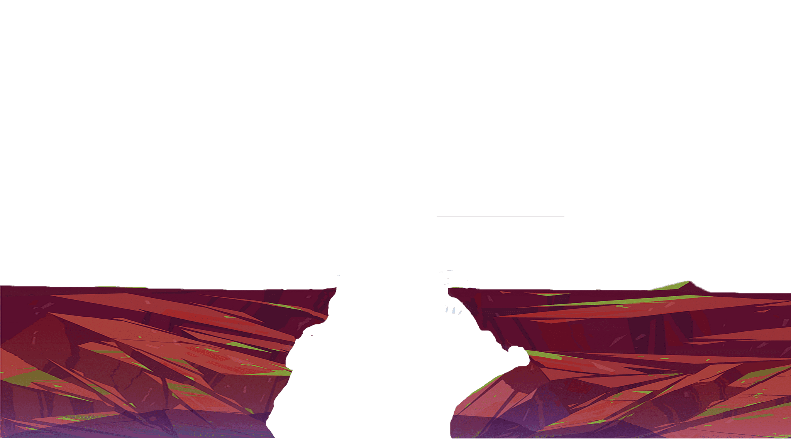
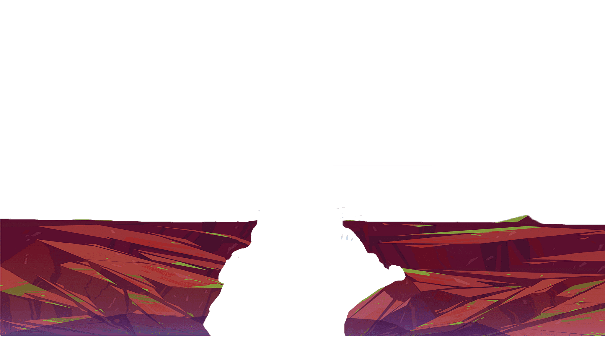
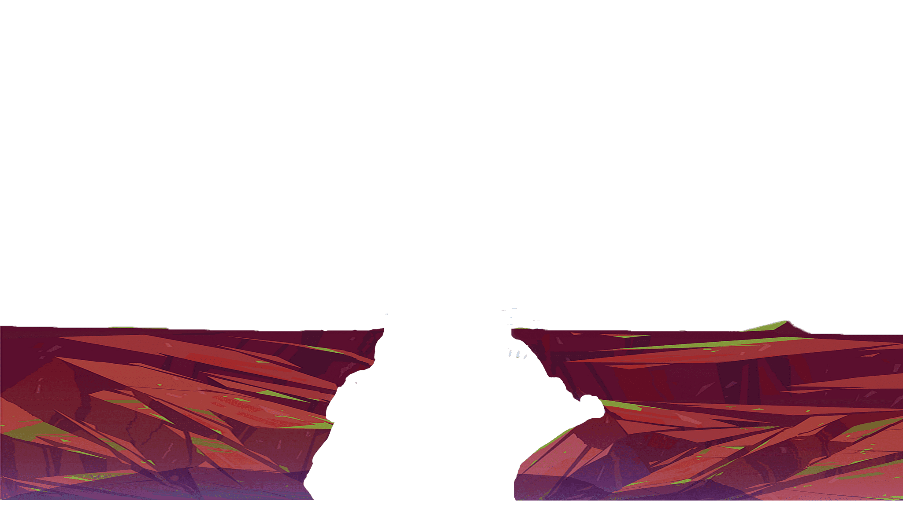
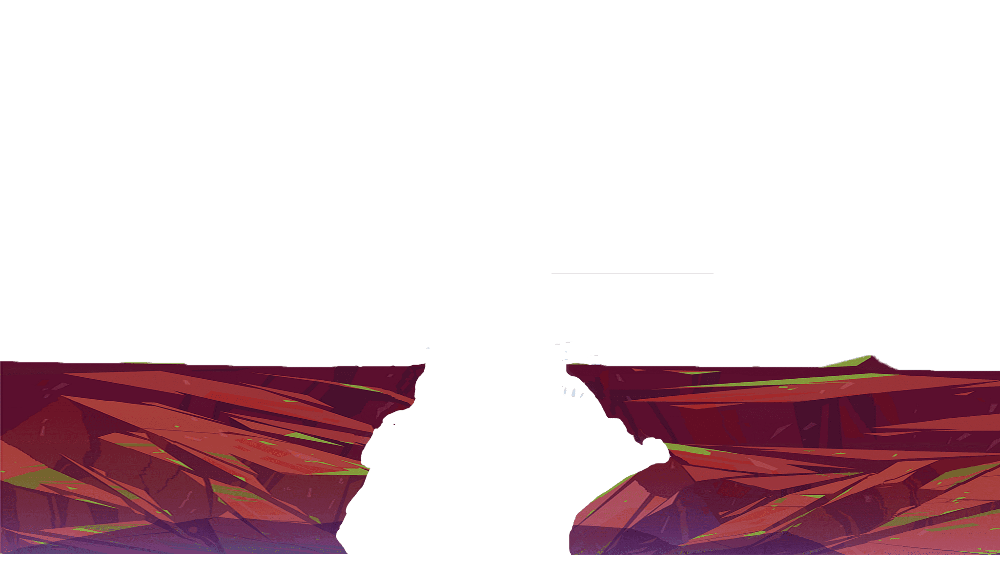

Ayo Belajar Mengenai
Laut


 Jelajahi Laut

Jelajahi Laut


 Jelajahi Laut

Jelajahi Laut



Lautan adalah hamparan air asin yang sangat luas, mencakup sekitar 71% permukaan Bumi dan membentuk lima samudra utama: Pasifik, Atlantik, Hindia, Arktik, dan Selatan. Lautan berperan penting dalam mengatur iklim, menjaga siklus hidrologi, dan mendukung kehidupan dengan menyediakan oksigen serta habitat bagi jutaan spesies, mulai dari plankton hingga mamalia laut seperti paus. Selain itu, lautan menjadi sumber daya alam yang penting, seperti ikan, mineral, dan minyak bumi, sekaligus menjadi jalur utama transportasi dan perdagangan global.
Namun, lautan menghadapi berbagai ancaman serius, seperti polusi plastik, pemanasan global, overfishing, dan kerusakan ekosistem, termasuk terumbu karang. Dampak negatif ini tidak hanya mengancam kehidupan di laut, tetapi juga keseimbangan ekosistem global dan keberlanjutan hidup manusia. Oleh karena itu, upaya perlindungan lautan sangat penting, seperti mengurangi limbah plastik, memberlakukan peraturan perikanan berkelanjutan, dan melestarikan ekosistem laut melalui kerja sama global.
Keadaan lautan saat ini menghadapi tantangan serius akibat berbagai aktivitas manusia dan perubahan iklim. Salah satu masalah utama adalah polusi, terutama sampah plastik yang mencemari ekosistem laut. Diperkirakan jutaan ton plastik masuk ke lautan setiap tahun, mengancam kehidupan laut seperti penyu, burung laut, dan ikan yang sering kali menganggap plastik sebagai makanan. Selain itu, pencemaran dari limbah industri, pertanian, dan tumpahan minyak semakin memperburuk kualitas air laut.
Perubahan iklim juga memberikan dampak besar terhadap lautan, seperti pemanasan suhu air yang menyebabkan pemutihan terumbu karang dan mengganggu habitat makhluk laut. Kenaikan permukaan laut akibat mencairnya es di kutub juga mengancam ekosistem pesisir dan komunitas manusia yang tinggal di wilayah pantai. Selain itu, overfishing atau penangkapan ikan berlebihan telah menyebabkan penurunan drastis populasi ikan tertentu, yang mengganggu keseimbangan ekosistem laut. Untuk mengatasi mas alah ini, diperlukan tindakan mendesak seperti pengurangan emisi karbon, pengelolaan perikanan yang berkelanjutan, dan pengelolaan limbah yang lebih baik.
Kira-kira, bagaimana ya cara melestarikan laut? Klik disini! Untuk mengetahui caranya!